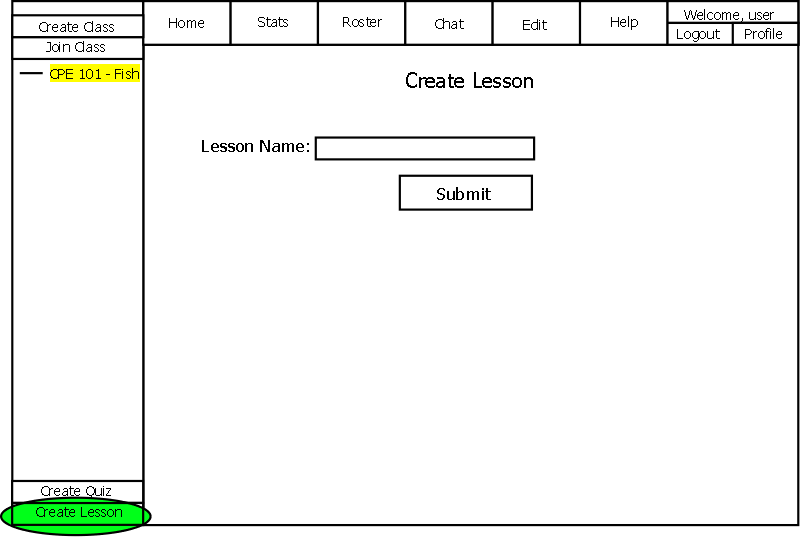
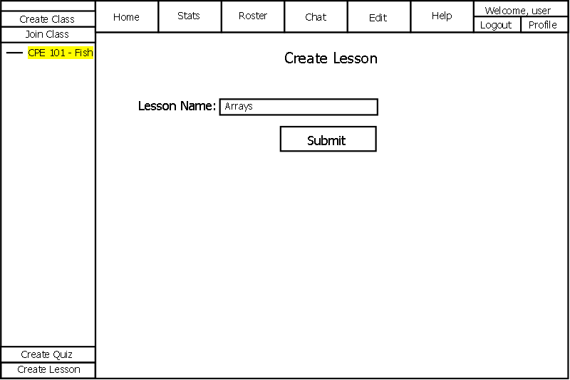
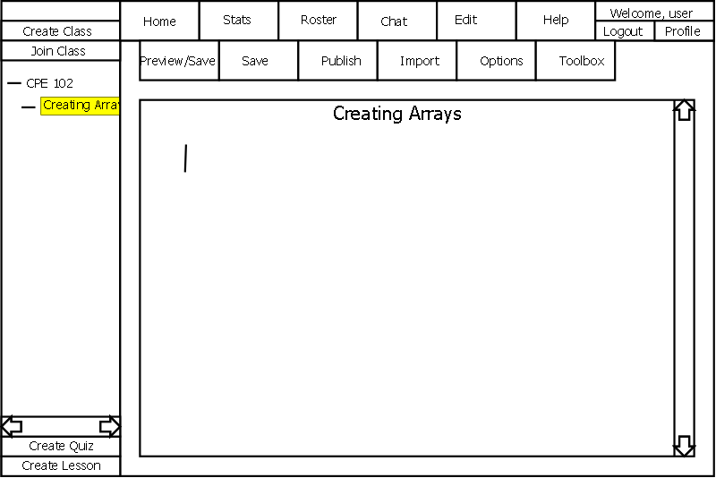

2.3.1.2 Creating a new Lesson
The Create Lesson button is only available for instructors and other users
with "Manage" permissions of the currently selected class.
For an instructor to add a new lesson for a class, he or she first clicks
on an existing class or lesson. The created lesson when submitted, becomes
a subsection of the currently selected class or lesson.
The instructor then clicks the "Create Lesson" button. CSTutor shows the screen in
Figure 2.3.1.2-1 and once completed, a new lesson is created.

Figure 2.3.1.2-1
This form takes in a Lesson name desired by the instructor. Once entered,
the page should look like Figure 2.3.1.2-2

Figure 2.3.1.2-2
When the instructor clicks Submit, the lesson is created.
The lesson name appears in the navigation bar on the left as a subsection
of the currently selected class and the CSTutor shows the instructor the Edit
Lesson page shown below.

Figure 2.3.1.2-3
More information on Editing Lessons.
Notes: Since a lesson can only be created as a subtopic and may be within another lesson, it
forms a directory structure with classes containing lessons which have
sub-lessons themselves.
Prev: creating classes
| Next: editing lessons
| Up: lesson manager
| Top: index